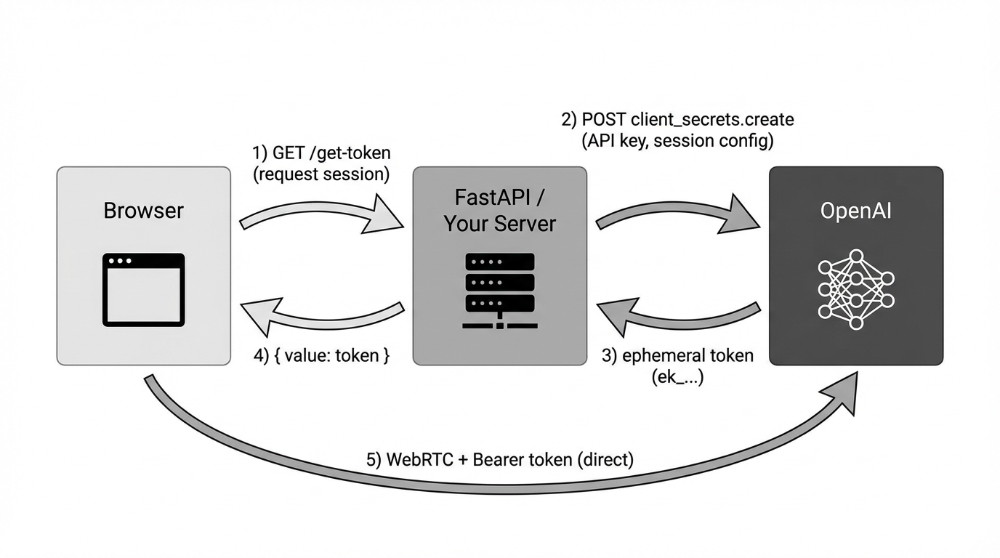
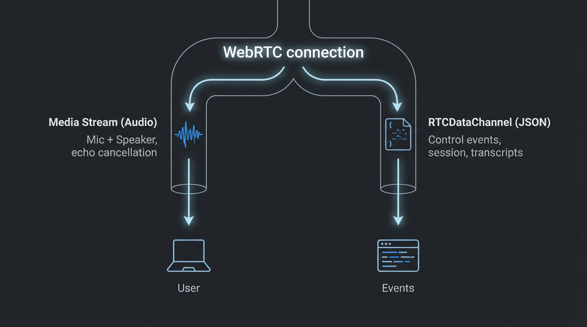

Simple Codebase: Replaces orchestration logic with a single persistent connection.
Built-in Server VAD: Handles silence detection on the server side.
The Cons: Production Costs
Vendor Lock-in: Limited to OpenAI's voices; cannot swap TTS/STT providers.
Higher Cost: Audio tokens are significant. A single conversation can burn budget quickly.
Ephemeral State: If the connection drops, short-term conversational context is instantly lost.
The Architecture of Trust (Session Tokens)

Security in Chapter 1:
Frontend requests permission to start a session from Backend.
Backend uses master API Key to request a short-lived Ephemeral Token from OpenAI via REST.
Backend sends Ephemeral Token to Frontend.
Frontend uses Ephemeral Token to establish direct WebRTC Connection to OpenAI.
Never expose your Master API Key in client-side code.
Modalities: Tracks vs. Channels

The WebRTC Connection is a single "pipe" with two parallel lanes:
Lane 1: Media Stream (Audio)
Handles microphone input and speaker output.
WebRTC automatically manages Echo Cancellation, Noise Suppression, and Jitter.
Lane 2: RTCDataChannel (JSON Logic)
Used for control events.
Session is set on the backend when creating the ephemeral token (Chapters 1–3: instructions, voice, unlock_door tool). The client never sends session.update.
Define Tool (backend): When creating the token, the session includes the unlock_door tool (accepts code) and instructions. No client session.update.
Interrogation: Student talks to Puzzle Master across multiple turns; The Enigma reveals the code gradually.
Tool Trigger: Student says the code (random each session, e.g. "4829").
Server Event: LLM emits response.function_call_arguments.done with name: "unlock_door".
Client Execution (Ch 3): React intercepts this on the data channel, verifies the code, sends tool result + response.create, and unlocks the door UI.
Backend WebSockets & Server-Side Control (Chapters 4–5)
The sideband pattern: Your server opens a second connection to the same Realtime session and can see every event, run tools, and control the conversation.
Same session, two connections: The browser keeps WebRTC for audio. After SDP exchange, the Location header gives a call_id. The frontend sends that to your backend; your backend opens wss://api.openai.com/v1/realtime?call_id=... with your API key.
Tool calling on the server: When the model emits response.function_call_arguments.done (e.g. unlock_door), your backend receives it, validates the code, calls your DB or APIs, then sends the tool result and response.create back to OpenAI. The frontend only gets a simple unlock_result from your WebSocket.
Control the conversation: Over the sideband you can inject instructions, update tools, or send response.cancel. You can do data lookups (e.g. check inventory, verify a passcode in your DB) without exposing logic to the client.
Chapter 4: Scaffold with a TODO — you implement the sideband. Chapter 5: Full implementation plus production polish (visualizers, captions, guessed codes).
Follow the # TODO comments for Chapters 1, 2, and 3.
Raise your hand if you hit an issue.
Scaling Concerns (State & Reconnection)
Statefulness is the Bottleneck
Realtime sessions are ephemeral; context drops with the connection.
Production Requirement: Backend must log every conversation.item (user and assistant messages).
Scaling Strategy: Backend must provide a mechanism to restore conversation history to a new session upon reconnection.
Monitor Cost
Audio tokens are significantly more expensive than text tokens.
Always use turn_detection settings carefully. Set limits in OpenAI billing dashboard.
Product & UX Polish Considerations
Handling "Barge-in" (Interruptibility)
With WebRTC (our app): The server manages the output audio buffer. When VAD detects user speech, the server cancels the in-progress response and automatically truncates unplayed audio. No client conversation.item.truncate needed.
With WebSocket: The client controls playback, so on input_audio_buffer.speech_started the client must stop playback and send conversation.item.truncate (with audio_end_ms) so the model knows where it was cut off.
User Feedback (Visualizers)
Voice AI must "breathe." Static UIs increase anxiety.
Requirement: Implement visualizers mapping local mic and remote AI audio tracks using the Web Audio API AnalyserNode (see Chapter 5).
Scalability Metrics That Matter
Metric
Target
Significance
TTFT (Time to First Token/Audio)
< 300ms
Necessary for "human" conversational feel.
Connection Stability
99.9% (Server)
Backend bottleneck in token exchange.
Jitter Buffer
Minimized
Jitter causes audio stutter. Managed by WebRTC browser API.